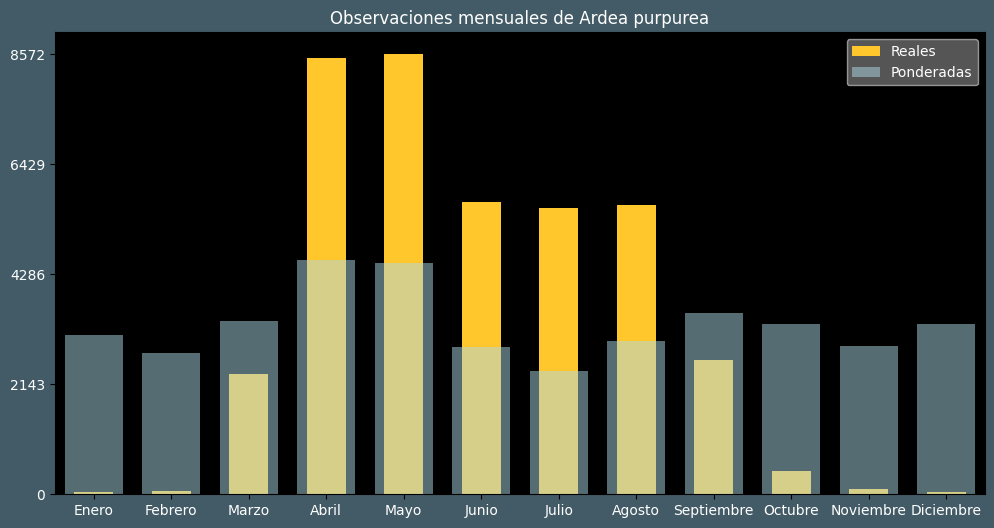

Observaciones por mes
Observations por hora

Categoría IUCN: LC
Género: Ardea
Familia: Ardeidae
Orden: Pelecaniformes
Descubrimiento: Linnaeus (1766)
| Idioma | Nombre |
|---|---|
| Afrikaans (af) | Rooireier |
| Arabic (ar) | بلشون ارجواني |
| Belarusian (be) | Чырвоная чапля |
| Bulgarian (bg) | Червена чапла |
| Catalan (ca) | Agró roig |
| Chinese (zh) | 草鹭 |
| Chinese traditional (zh-TW) | 紫鷺〔草鷺〕 |
| Croatian (hr) | Čaplja danguba |
| Czech (cs) | Volavka červená |
| Danish (da) | Purpurhejre |
| Dutch (nl) | Purperreiger |
| English (en) | Purple heron |
| Estonian (et) | Purpurhaigur |
| Finnish (fi) | Ruskohaikara |
| French (fr) | Héron pourpré |
| German (de) | Purpurreiher |
| Greek (el) | Πορφυροτσικνιάς |
| Hebrew (he) | אנפה ארגמנית |
| Hungarian (hu) | Vörös gém |
| Icelandic (is) | Rauðhegri |
| Indonesian (id) | Cangak merah |
| Italian (it) | Airone rosso |
| Japanese (ja) | ムラサキサギ |
| Korean (ko) | 붉은왜가리 |
| Latvian (lv) | Rudais gārnis |
| Lithuanian (lt) | Purpurinis garnys |
| Maceodnian (mk) | Црвена чапја |
| Malayalam (ml) | ചായമുണ്ടി |
| North_sami (se) | Purporháigir |
| Norwegian (no) | Purpurhegre |
| Persian (fa) | حواصیل ارغوانی |
| Polish (pl) | Czapla purpurowa |
| Portuguese (pt) | Garça-vermelha |
| Russian (ru) | Рыжая цапля |
| Serbian (sr) | Crvena čaplja |
| Slovak (sk) | Volavka purpurová |
| Spanish (es) | Garza imperial |
| Swedish (sv) | Purpurhäger |
| Thai (th) | นกกระสาแดง |
| Turkish (tr) | Erguvani balıkçıl |
| Ukrainian (uk) | Чапля руда |